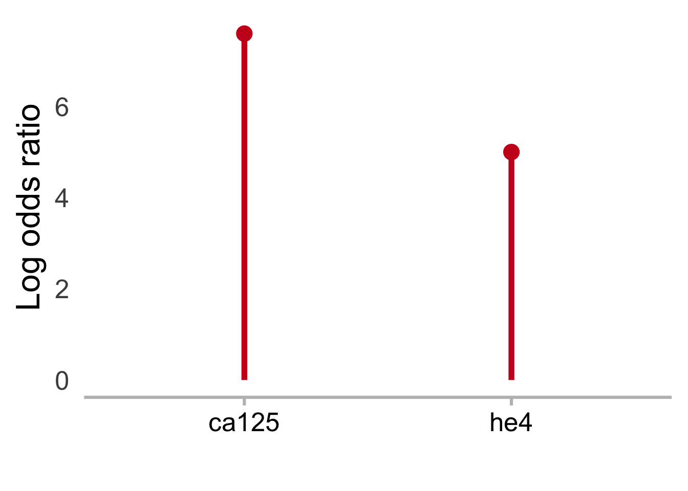
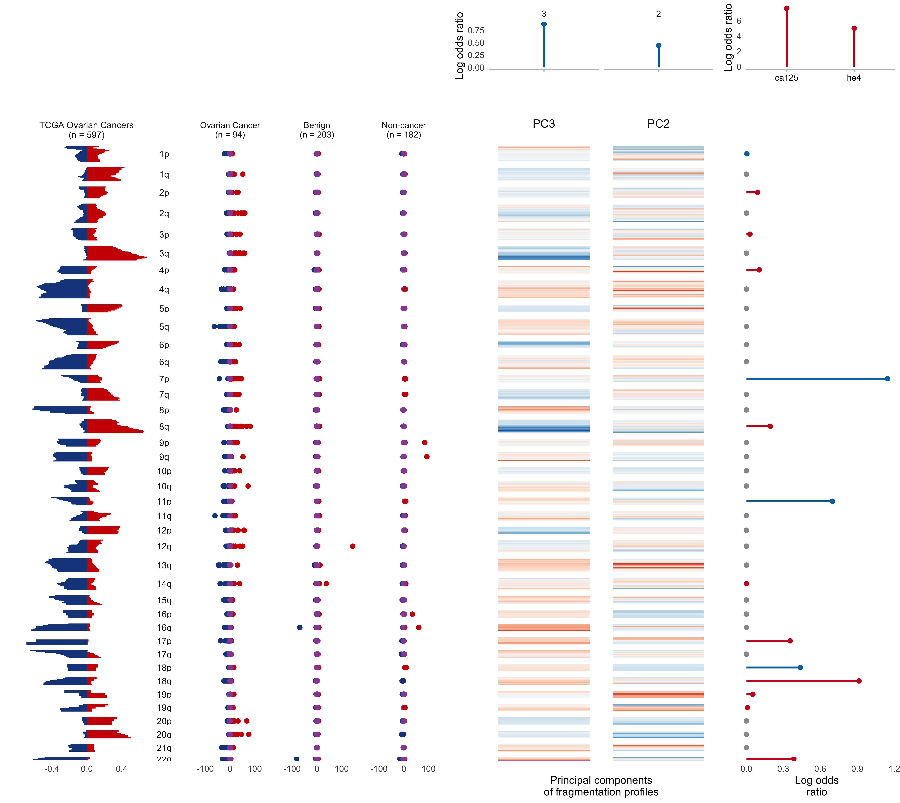

Last updated: 2024-08-01
Checks: 6 1
Knit directory: delfipro2024/
This reproducible R Markdown analysis was created with workflowr (version 1.6.2). The Checks tab describes the reproducibility checks that were applied when the results were created. The Past versions tab lists the development history.
The R Markdown is untracked by Git. To know which version of the R
Markdown file created these results, you’ll want to first commit it to
the Git repo. If you’re still working on the analysis, you can ignore
this warning. When you’re finished, you can run
wflow_publish to commit the R Markdown file and build the
HTML.
Great job! The global environment was empty. Objects defined in the global environment can affect the analysis in your R Markdown file in unknown ways. For reproduciblity it’s best to always run the code in an empty environment.
The command set.seed(20240612) was run prior to running
the code in the R Markdown file. Setting a seed ensures that any results
that rely on randomness, e.g. subsampling or permutations, are
reproducible.
Great job! Recording the operating system, R version, and package versions is critical for reproducibility.
Nice! There were no cached chunks for this analysis, so you can be confident that you successfully produced the results during this run.
Great job! Using relative paths to the files within your workflowr project makes it easier to run your code on other machines.
Great! You are using Git for version control. Tracking code development and connecting the code version to the results is critical for reproducibility.
The results in this page were generated with repository version 0dea39c. See the Past versions tab to see a history of the changes made to the R Markdown and HTML files.
Note that you need to be careful to ensure that all relevant files for
the analysis have been committed to Git prior to generating the results
(you can use wflow_publish or
wflow_git_commit). workflowr only checks the R Markdown
file, but you know if there are other scripts or data files that it
depends on. Below is the status of the Git repository when the results
were generated:
Ignored files:
Ignored: .DS_Store
Ignored: analysis/.DS_Store
Ignored: analysis/.Rhistory
Ignored: code/.DS_Store
Ignored: code/.Rhistory
Ignored: data/.DS_Store
Untracked files:
Untracked: CITATION.md
Untracked: analysis/2A.Rmd
Untracked: analysis/2B.Rmd
Untracked: analysis/2c.Rmd
Untracked: analysis/2d.Rmd
Untracked: analysis/3abc.Rmd
Untracked: analysis/3d.Rmd
Untracked: analysis/4bcd.Rmd
Untracked: analysis/S1.Rmd
Untracked: analysis/S10B_C.Rmd
Untracked: analysis/S10a.Rmd
Untracked: analysis/S11.Rmd
Untracked: analysis/S12.Rmd
Untracked: analysis/S13abc.Rmd
Untracked: analysis/S13d.Rmd
Untracked: analysis/S14.Rmd
Untracked: analysis/S15B_C.Rmd
Untracked: analysis/S15a.Rmd
Untracked: analysis/S16.Rmd
Untracked: analysis/S17.Rmd
Untracked: analysis/S2.Rmd
Untracked: analysis/S3.Rmd
Untracked: analysis/S4.Rmd
Untracked: analysis/S5.Rmd
Untracked: analysis/S6.Rmd
Untracked: analysis/S7.Rmd
Untracked: analysis/S8.Rmd
Untracked: analysis/S9.Rmd
Untracked: analysis/S_Source.Rmd
Untracked: analysis/SessionInfo.Rmd
Untracked: code/Simulation_setup.Rmd
Untracked: code/allcancer_table_diag.r
Untracked: code/allcancer_table_screen.r
Untracked: code/collect_scores.r
Untracked: code/diagnostic_model.r
Untracked: code/feature_importance.Rmd
Untracked: code/hgsoc_table_diag.r
Untracked: code/hgsoc_table_screen.r
Untracked: code/liver.tools/
Untracked: code/proteins_screening_model.r
Untracked: code/screening_model.r
Untracked: code/useful.stuff.aa/
Untracked: data/06062024_val_tumor_size.xlsx
Untracked: data/2B.csv
Untracked: data/2B_annot.csv
Untracked: data/CA125_HE4_Manifest_Results to Velculescu Group 09 22 23.xlsx
Untracked: data/Proteins.csv
Untracked: data/S12_data.csv
Untracked: data/S12_data_p2.csv
Untracked: data/S1_data.csv
Untracked: data/S2_data.csv
Untracked: data/S5.csv
Untracked: data/S5_p2.csv
Untracked: data/diag_test_data.csv
Untracked: data/diag_train_data.csv
Untracked: data/final_list_ovarian_3_15_24_benign_masses.xlsx
Untracked: data/ichor_mfl_excel.xlsx
Untracked: data/long_bins_hiseq.csv
Untracked: data/metadata.csv
Untracked: data/models/
Untracked: data/scores/
Untracked: data/screening_test_data.csv
Untracked: data/screening_train_data.csv
Untracked: data/simulations_metrics.csv
Untracked: data/stability_superscreen.csv
Untracked: data/tables/
Untracked: data/tcga/
Untracked: output/feature_importance.Rmd/
Unstaged changes:
Modified: .Rprofile
Modified: .gitattributes
Modified: .gitignore
Modified: README.md
Modified: _workflowr.yml
Modified: analysis/_site.yml
Modified: analysis/about.Rmd
Modified: analysis/index.Rmd
Modified: analysis/license.Rmd
Modified: code/README.md
Modified: data/README.md
Modified: delfipro2024.Rproj
Modified: output/README.md
Note that any generated files, e.g. HTML, png, CSS, etc., are not included in this status report because it is ok for generated content to have uncommitted changes.
There are no past versions. Publish this analysis with
wflow_publish() to start tracking its development.
Read in Noushin’s data for TCGA figure
fig.data <- readRDS(here('data', 'tcga', 'data.rds'))TCGA figure panel – problems, chromosome widths, making the panel match size of one facet in z-score panel
setDT(fig.data)
fig.data[,bin:=as.factor(rev(bin))][] seqnames pos arm bin variable value disease change
1: chr1 7500000 1p 473 liver.Loss -0.208754209 liver Loss
2: chr1 17500000 1p 472 liver.Loss -0.239057239 liver Loss
3: chr1 22500000 1p 471 liver.Loss -0.254208754 liver Loss
4: chr1 27500000 1p 470 liver.Loss -0.227272727 liver Loss
5: chr1 32500000 1p 469 liver.Loss -0.126262626 liver Loss
---
942: chr22 27500000 22q 5 liver.Gain 0.028619529 liver Gain
943: chr22 32500000 22q 4 liver.Gain 0.037037037 liver Gain
944: chr22 37500000 22q 3 liver.Gain 0.020202020 liver Gain
945: chr22 42500000 22q 2 liver.Gain 0.006734007 liver Gain
946: chr22 47500000 22q 1 liver.Gain 0.000000000 liver Gainfig.data$disease<-"TCGA Ovarian Cancers\n(n = 597)"
plot <- fig.data %>%
mutate(disease="TCGA Ovarian Cancers\n(n = 597)") %>%
ggplot(aes(x=value, y=bin, color=change, fill=change)) +
facet_grid(arm~disease, scales = 'free_y') + ##,
## switch = 'y')+#, space = 'free')+
##facet_wrap(~arm, ncol=1, scales="free_y") + ##
geom_col() +
scale_x_continuous() +
#scale_fill_brewer(palette = 'Set1')+
#scale_color_brewer(palette = 'Set1')+
scale_color_manual(values=c("red3","#18468B"))+
scale_fill_manual(values=c("red3","#18468B"))+
theme_minimal(base_size=24) +
theme(strip.text.y = element_text(angle = 0,
hjust = 0.5,
vjust = 0.5,
size=20),
strip.text.x=element_text(size=20),
axis.text.y = element_blank(),
axis.ticks = element_blank(),
panel.grid = element_blank(),
legend.title = element_blank(),
legend.position="bottom",
axis.title.x = element_blank(),
strip.background = element_blank()) + ##removing label
#xlab("Proportion of\ncases with CNV") +
ylab("Chromosome Arm")The z-score’s with our data panel. Problems – chromosome width.
meta<-fread(here("data","metadata.csv"))
meta<-meta %>% select(-V1) %>% mutate(classifier_type2=if_else(id=="CGPLOV161P","Benign",classifier_type2))
data<-fread(here("data","screening_train_data.csv")) %>% select(-type)
data2<-fread(here("data","diag_train_data.csv")) %>% filter(type=="healthy") %>% select(-type)
data<-rbind(data,data2)
data<-inner_join(data,meta %>% select(id,classifier_type),by="id") %>% rename(type=classifier_type)
features<-data
cols <- brewer.pal(7,"Set1")
cols[3] <- cols[4]
features <- features %>% select(id,starts_with("z"))
features <- inner_join(features, meta %>%
select(id,`classifier_type2`),
by=c("id"="id"))
datx<-read_csv(here("data/scores","All_Scores_CV.csv"))New names:Rows: 479 Columns: 22── Column specification ────────────────────────────────────────────────────────
Delimiter: ","
chr (16): id, id2, cohort, type, type2, training_set_include_screening, trai...
dbl (5): ...1, Screening ZEUS, Diagnostic ZEUS, ca125, he4
lgl (1): menopause_status
ℹ Use `spec()` to retrieve the full column specification for this data.
ℹ Specify the column types or set `show_col_types = FALSE` to quiet this message.datx<-datx %>% filter(training_set_include_screening=="yes"|training_set_include_diag=="yes")
datx<-datx %>% select(id,classifier_type,`Screening ZEUS`,`Diagnostic ZEUS`,subtype_simple,stage)
datx<-datx %>% gather(key=model,value=score,-stage,-subtype_simple,-classifier_type,-id) %>% filter(!is.na(score))
features<-features %>% filter(id %in% datx$id)
features <- features %>%
gather(key="Arm", value="Zscore", starts_with("z"))
features$Arm <- sapply( str_split(features$Arm,"_"), "[", 2 )
chrlevels <- c("1p","1q","2p","2q","3p","3q","4p","4q","5p",
"5q","6p","6q","7p","7q","8p","8q","9p","9q",
"10p","10q","11p","11q","12p","12q",
"13q","14q","15q","16p","16q","17p","17q",
"18p","18q","19p","19q","20p","20q","21q","22q")
features$Arm <- factor(features$Arm,
levels = chrlevels)
features <- features %>% mutate(colors=if_else(Zscore<=0,"Negative","Positive"))
##features$colors<-factor(features$colors,levels=c("Positive","Negative"))
##Z-score for two-tailed p-value .05 w/ bonferroni correction for 39 arms
features <- features %>%
mutate(colors=if_else(Zscore>= -3.22 & Zscore <= 3.22 ,
"Neutral", features$colors))
##features<- features %>% mutate(transp=if_else(colors=="Neutral",.9,.2))
##features<- features %>% mutate(transp=if_else(colors=="Neutral",.05,.99))
features <- features %>% mutate(transp=if_else(colors=="Neutral",1,1))
##features<-features %>% mutate(colors=if_else(Zscore<=0,"Negative","Positive"))
features$colors<-factor(features$colors,levels=c("Positive","Negative","Neutral"))
features$y=1
##features$log<-log10(abs(features$Zscore))
##features <- features %>% mutate(log=if_else(Zscore<=0,-1*log,log))
features <- features %>% mutate(Zscore=if_else(Zscore<=-150,-150,Zscore))
features <- features %>% mutate(Zscore=if_else(Zscore>150,150,Zscore))
features <- features %>%
mutate(`type`=if_else(`classifier_type2`=="cancer","Ovarian Cancer",classifier_type2))
features <- features %>%
mutate(`type`=if_else(`classifier_type2`=="non-cancer","Non-cancer",type))
features$type <- factor(features$`type`,
levels=c("Ovarian Cancer","Benign","Non-cancer"))
features2 <- features %>%
rename(z=Zscore) %>%
mutate(root2=nroot(z, 2)) %>%
mutate(root3=nroot(z, 3))
features2 <- features2 %>%
select(id, type, Arm,
z, root2, root3, y, colors, transp)
###YOU ARE HERE AFTER LUNCH!!!
b<-features2 %>% filter(type=="Benign")
#b2<-meta %>% select(-V1) %>% filter(classifier_type2=="Benign") %>% filter(training_set_include_diag=="yes")
ns <- features2 %>%
group_by(type) %>%
summarize(n=length(unique(id))) %>%
mutate(label=paste0(type, "\n(n = ", n, ")"))
ns <- setNames(ns$label, ns$type)
cols[2]<-"#18468B"
cols[1]<-"red3"
zplot_cancer <- features2 %>%
ggplot(aes(x=y, y=z, color=colors, alpha=transp)) +
geom_point(size=5) +
facet_grid(Arm ~ type, scales = 'free_y',labeller=labeller(type=ns)) +
coord_flip() +
theme_minimal(base_size=24) +
theme(strip.text.y.left = element_text(angle = 0,
hjust = 0.5,
vjust = 0.5),
axis.text.y = element_blank(),
axis.ticks = element_blank(),
panel.grid = element_blank(),
plot.title = element_blank(),
legend.title = element_blank(),
axis.title.y=element_blank(),
legend.position = "bottom",
strip.text.y = element_blank(),
axis.title.x = element_blank()) + #####removing label
scale_y_continuous(limits = c(-150,150)) +
scale_alpha_identity() +
scale_fill_manual(values = cols) +
scale_color_manual(values = cols) #+
#ylab("Z-Score")Adding together the TCGA and z-score panel – problems – chromosome width, size of TCGA panel, not yet stacked with feature importance panel.
#pdf("test.pdf")
cowplot::plot_grid(plot,zplot_cancer,nrow=1,align="v",axis="l")
#dev.off() #Feature importance panel
results<-readRDS(here("output","feature_importance.Rmd",
"loadings.rds"))
pd <- results[["pd"]]
sc <- results[["sc"]]
#---------------- now make plots -----------------###
# visualize feature by PC heatmap ##
pc.labels <- c("PC1\n", "PC2\n", "PC3\n") %>%
setNames(1:3)
heatmap <- pd %>% filter(variable != "PC1")%>%
ggplot(aes(x = pc.id, y = bin.id)) +
facet_grid(arm ~ pc.id, scales = 'free',
switch = 'y', space = 'free',
labeller=labeller(pc.id=pc.labels))+
geom_tile(aes(fill = value)) +
scale_fill_distiller(palette = 'RdBu') +
scale_y_continuous(trans = 'reverse') +
theme_minimal(base_size=24) +
labs(x = 'Principal components\nof fragmentation profiles', y = '', fill = 'Value') +
theme(axis.text.x=element_text(color="white"),
strip.text.y=element_blank(),
strip.text.x=element_text(size=26),
axis.text.y = element_text(color="white"),
axis.title.y=element_text(color="white"),
axis.ticks = element_blank(),
panel.grid = element_blank(),
legend.position = 'none') +
ylab("Something")ta <- subset(sc, grepl('PC', features))
ta$pc.id <- gsub('PC', '', gsub(' ','',ta$features))
ta$sign.value = factor(ta$sign.value, levels = c(-1, 1))
ta <- ta[,c('pc.id', 'abs.value', 'sign.value')]
#ta <- rbind(ta, data.frame(pc.id = setdiff(seq(3), ta$pc.id), abs.value =0, sign.value = NA))
ta$pc.id <- factor(ta$pc.id, levels = ta$pc.id)
ta$x = 1
ta$arm = 1
ta pc.id abs.value sign.value x arm
5 3 0.8718138 -1 1 1
4 2 0.4426378 -1 1 1cols <- c('#0571b0', '#ca0020', '#999999')
names(cols) <- c('-1', '1', NA)
top.annot <- ta %>%
ggplot(aes(x = pc.id, y = abs.value, colour = sign.value)) +
facet_grid(arm ~ pc.id, scales = 'free',
switch = 'y', space = 'free') +
geom_point(size = 5) +
geom_segment(aes(x = pc.id,
xend = pc.id,
y = abs.value, yend = 0),
size=2) +
theme_minimal(base_size=24) +
ylab("Log odds ratio") +
xlab("") +
theme(axis.text.x=element_text(color="white"),
strip.text.y=element_blank(),
axis.line.x=element_line(color="gray"),
axis.ticks.x=element_line(color="gray"),
axis.ticks = element_blank(),
panel.grid = element_blank(),
legend.position = 'none') +
## theme(panel.grid=element_blank(),
## strip.text.y = element_blank(),
## strip.text.x = element_blank(),
## axis.text.x = element_blank(),
## axis.ticks = element_blank(),
## panel.border = element_rect(color = "white",
## fill = NA, size = 0.2),
## legend.position = 'none') +
scale_color_manual(values = cols, na.value = '#999999')Warning: Using `size` aesthetic for lines was deprecated in ggplot2 3.4.0.
Warning: Please use `linewidth` instead.bins5mb <- read_csv(here("data","long_bins_hiseq.csv"),
show_col_types=FALSE) New names:bins5mb<-bins5mb %>% filter(id %in% features$id)
bins5mb<-bins5mb %>% select(-`...1`)
sa <- side_annotation(pd, sc, bins5mb)
#sa2 <- results2[["sc"]]
#sa2<-sa2 %>% filter(! features %in% c("PC 1","PC 2", "PC 3","TF_pc_1"))
#pd2 <- results2[["pd"]]
#sa_temp <- side_annotation(pd2, sc2, bins5mb)$arm.imp
#x <- strsplit(as.character(sa2$features), " " )
#sa2$arm<-sapply( x, "[", 2 )
#sa2<-left_join(sa_temp %>% select(-abs.value),sa2 %>% select(arm,abs.value,scaled_coefs),by="arm")
#sa2 <- sa2 %>% mutate(abs.value=if_else(is.na(abs.value),0,abs.value))
#sa2<-sa2 %>% mutate(sign.value=sign(scaled_coefs))
#sa2 <- sa2 %>% select(-scaled_coefs)
bl <- sa[["bl"]]
arm.imp <- sa[["arm.imp"]]
#arm.imp$model<-"DELFI"
#sa2$model<-"DELFI+TF"
#arm.imp<-rbind(arm.imp,sa2)
right.annot <- bl %>%
ggplot(aes(x = x, y = bin.id)) +
geom_point(color = 'white') +
facet_grid(arm ~ pc.id,
scales = 'free',
switch = 'y', space = 'free') +
theme_minimal(base_size=24) +
geom_point(data = arm.imp,
aes(x = abs.value,
y = bin.id, color = sign.value),
size=5) +
geom_segment(data = arm.imp,
aes(x = abs.value, xend = 0,
y = bin.id, yend = bin.id,
color = sign.value),
size=2) +
scale_color_manual(values = cols, na.value = '#999999') +
scale_y_continuous(breaks = c(0,2,4,6)) +
labs(x = 'Log odds\nratio', y = '', color = '') +
theme(strip.text.x = element_blank(),
strip.text.y = element_blank(),
axis.text.y = element_blank(),
axis.ticks = element_blank(),
panel.border = element_blank(),
panel.grid=element_blank(),
legend.position = 'none')cols <- c('#0571b0', '#ca0020', '#999999')
names(cols) <- c('-1', '1', NA)
p<-sc %>% filter(features %in% c("ca125","he4"))
p$feature.type<-"Protein"
extra.annot <- p %>%
ggplot(aes(x = features, y = abs.value, colour = sign.value)) +
geom_point(size = 5) +
geom_segment(aes(x = features,
xend = features,
y = abs.value, yend = 0),
size=2) +
theme_minimal(base_size=24) +
ylab("Log odds ratio") +
xlab("") +
theme(axis.text.x=element_text(color="black"),
strip.text.y=element_blank(),
axis.line.x=element_line(color="gray"),
axis.ticks.x=element_line(color="gray"),
axis.ticks = element_blank(),
panel.grid = element_blank(),
legend.position = 'none') +
## theme(panel.grid=element_blank(),
## strip.text.y = element_blank(),
## strip.text.x = element_blank(),
## axis.text.x = element_blank(),
## axis.ticks = element_blank(),
## panel.border = element_rect(color = "white",
## fill = NA, size = 0.2),
## legend.position = 'none') +
scale_color_manual(values = cols, na.value = '#999999')
extra.annot
Assembling the 3 pieces of the feature importance figure into one panel
hmap <- ggplotGrob(heatmap)
z.coef <- ggplotGrob(right.annot)
pc.coef <- ggplotGrob(top.annot)
h <- hmap$heights
## I think these widths correspond to the panels
ix <- seq(from=8, by=2, length.out=39)
## make logical
is_arm <- seq_along(h) %in% ix
h2 <- h[is_arm]
size <- map_dbl(h2, function(x) unlist(x)[[1]])
## The widths less than 100 might be too small
is2small <- size < 12
h2[is2small] <- unit(12, "null")
h[is_arm] <- h2
z.coef$heights = h
hmap$heights <- h
hmap$widths <- pc.coef$widths
#saveRDS(h, file="../data/arm_heights.rds")
extra.coef <- ggplotGrob(extra.annot)#tf<-ggplotGrob(tf_annotation)
#tf$widths<-z.coef$widths
#tf$heights<-z.coef$heights
tcga.legend <- cowplot::get_legend(plot)Warning in get_plot_component(plot, "guide-box"): Multiple components found;
returning the first one. To return all, use `return_all = TRUE`.p2 <- plot +
guides(fill="none", color="none") +
ylab("")
g1 <- ggplotGrob(p2)
g1$heights <- h
zscore.legend <- cowplot::get_legend(zplot_cancer)Warning in get_plot_component(plot, "guide-box"): Multiple components found;
returning the first one. To return all, use `return_all = TRUE`.p3 <- zplot_cancer +
guides(color="none", fill="none")
g2 <- ggplotGrob(p3)
g2$heights <- h
gl <- list(g1,
g2,
pc.coef,
hmap,
z.coef,
nullGrob(),extra.coef)
m <- rbind(c(6, 6, 3, 7),
c(1, 2, 4, 5))
grid.arrange(grobs=gl,
layout_matrix=m,
heights=c(1, 7),
widths=c(2.7, 4, 4, 2.7),
padding=unit(0, "lines")) ##
sessionInfo()R version 4.0.5 (2021-03-31)
Platform: x86_64-apple-darwin17.0 (64-bit)
Running under: macOS Big Sur 10.16
Matrix products: default
BLAS: /Library/Frameworks/R.framework/Versions/4.0/Resources/lib/libRblas.dylib
LAPACK: /Library/Frameworks/R.framework/Versions/4.0/Resources/lib/libRlapack.dylib
locale:
[1] en_US.UTF-8/en_US.UTF-8/en_US.UTF-8/C/en_US.UTF-8/en_US.UTF-8
attached base packages:
[1] grid stats graphics grDevices utils datasets methods
[8] base
other attached packages:
[1] liver.tools_0.0.0.9000 devtools_2.4.2 usethis_2.0.1
[4] readxl_1.3.1 ggstance_0.3.7 here_1.0.1
[7] gridExtra_2.3 RColorBrewer_1.1-2 data.table_1.14.0
[10] forcats_0.5.1 stringr_1.5.1 dplyr_1.1.4
[13] purrr_1.0.2 readr_2.0.1 tidyr_1.3.1
[16] tibble_3.2.1 ggplot2_3.5.0 tidyverse_1.3.1
[19] workflowr_1.6.2
loaded via a namespace (and not attached):
[1] fs_1.5.0 lubridate_1.7.10 bit64_4.0.5 httr_1.4.2
[5] rprojroot_2.0.2 tools_4.0.5 backports_1.2.1 bslib_0.3.0
[9] utf8_1.2.2 R6_2.5.1 DBI_1.1.1 colorspace_2.0-2
[13] withr_3.0.0 tidyselect_1.2.1 prettyunits_1.1.1 processx_3.5.2
[17] bit_4.0.4 compiler_4.0.5 git2r_0.28.0 cli_3.6.2
[21] rvest_1.0.1 xml2_1.3.2 desc_1.3.0 labeling_0.4.2
[25] sass_0.4.0 scales_1.3.0 callr_3.7.0 digest_0.6.27
[29] rmarkdown_2.10 pkgconfig_2.0.3 htmltools_0.5.2 sessioninfo_1.1.1
[33] highr_0.9 dbplyr_2.1.1 fastmap_1.1.0 rlang_1.1.3
[37] rstudioapi_0.13 farver_2.1.0 jquerylib_0.1.4 generics_0.1.3
[41] jsonlite_1.7.2 vroom_1.5.4 magrittr_2.0.1 Rcpp_1.0.7
[45] munsell_0.5.0 fansi_0.5.0 lifecycle_1.0.4 stringi_1.7.4
[49] yaml_2.2.1 plyr_1.8.6 pkgbuild_1.2.0 parallel_4.0.5
[53] promises_1.2.0.1 crayon_1.4.1 cowplot_1.1.1 haven_2.4.3
[57] hms_1.1.0 knitr_1.33 ps_1.6.0 pillar_1.9.0
[61] pkgload_1.2.1 reprex_2.0.1 glue_1.7.0 evaluate_0.14
[65] remotes_2.4.0 modelr_0.1.8 vctrs_0.6.5 tzdb_0.1.2
[69] httpuv_1.6.2 testthat_3.0.4 cellranger_1.1.0 gtable_0.3.0
[73] assertthat_0.2.1 cachem_1.0.6 xfun_0.25 broom_0.7.9
[77] later_1.3.0 memoise_2.0.0 ellipsis_0.3.2